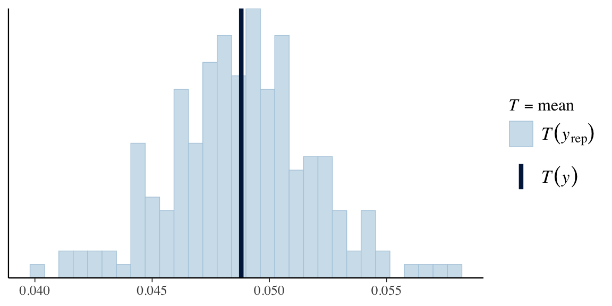

Show code
N_SUB <- 10000
sub <- simulate_cohort(n = N_COHORT, seed = 2024)
sub$age_c <- (sub$age - 62) / 10 # base assignment keeps the oracle attribute
sub <- sub[seq_len(N_SUB), ]
truth <- cohort_truth(sub)This appendix is the runnable companion to the brms syntax map of Appendix D. It does three things. It indexes where in the book each recurring modelling task is carried out in brms, so that a reader looking for “how do I fit a Poisson rate model with an offset” can go straight to the chapter that does it. It then walks once, on the book’s simulated cohort, through the complete pipeline every cohort chapter follows — declare priors, fit and cache, check the sampler, check the fit, read the effect off as a marginal contrast, reproduce it by g-computation — in a single place. And it fills three gaps: methods that an epidemiologist will need and that no chapter of the book demonstrates in brms, because the chapters fit them another way or not at all — inverse-probability weighting, a confounder measured with error, and the pooling of estimates across studies. Every fit is cached under models/ with file_refit = "on_change", the book’s convention, so that re-rendering is cheap.
brms recipes, by task.
| Task | Chapter | brms construct |
|---|---|---|
| Declare priors; list a model’s parameters and defaults | Chapter 23; Appendix D | prior(), default_prior(), prior_summary() |
| Prior predictive check | Chapter 10, Chapter 23 | sample_prior = "only", pp_check() |
| Fit, cache, refit only when data or code change | every cohort chapter; Chapter 16 is the worked example | brm(file = , file_refit = "on_change") |
| Convergence: R-hat, effective sample size, divergences | Section 23.2.2, Chapter 29 | brms::rhat(), brms::nuts_params() |
| Posterior predictive check | Chapter 23 | pp_check() |
| Comparing models | Chapter 23 | loo(), loo_compare() |
| Risk ratio and risk difference as marginal contrasts | Chapter 16, Chapter 17, Chapter 29 | marginaleffects::avg_comparisons(comparison = "ratioavg") |
| Effect modification | Chapter 17 | avg_comparisons(by = ) |
| The Poisson working model for the risk ratio of a binary outcome | Chapter 13 | family = poisson() on a 0/1 outcome |
| Standardisation and g-computation from the posterior | Chapter 29, Chapter 23 | posterior_epred() on counterfactual data |
| Rates with person-time | Chapter 25, Chapter 26 | offset(log(pt)), poisson() |
| Survival as a piecewise-exponential Poisson model | Chapter 26 | Lexis expansion, offset(), s() on time |
| Clustered data and partial pooling | Chapter 28 | (1 \| clinic), prior(lkj(2), class = cor) |
| Repeated measures, autocorrelation, Gaussian processes | Appendix E | ar(), cosy(), unstr(), gp() |
| Curves and smooth interactions | Chapter 24, Appendix F | s(), t2() |
| Missing data by joint modelling | Chapter 30 | mi(), set_rescor(FALSE) |
| A two-equation system (instrumental variables) | Chapter 18 | bf() + bf() + set_rescor(TRUE) |
| Sustained strategies and time-varying confounding | Chapter 15, Chapter 29 | forward simulation from the posterior |
| Doubly robust estimation | Chapter 29 | outcome model + propensity model, cross-fitting |
| Sensitivity to unmeasured confounding | Chapter 20 | the bounding factor; not a brms construct |
The cohort of Chapter 11, restricted to its first 10 000 patients so that every fit below runs in minutes; the true risk ratio built into the simulation is read from the oracle.
N_SUB <- 10000
sub <- simulate_cohort(n = N_COHORT, seed = 2024)
sub$age_c <- (sub$age - 62) / 10 # base assignment keeps the oracle attribute
sub <- sub[seq_len(N_SUB), ]
truth <- cohort_truth(sub)Priors first. default_prior() lists every parameter the model has, with the brms default filled in, which is the quickest way to learn what the parameters are called before writing priors for them (Table C.2). The book never accepts the flat default on regression coefficients: a stroke risk near 5% puts the intercept near -3.0 on the logit scale, and a Normal(0, 1.5) prior on the log odds ratios rules out nothing a drug or a covariate could plausibly do.
f_out <- stroke ~ drug + severity + age_c + diabetes
default_prior(f_out, data = sub, family = bernoulli()) |>
as.data.frame() |> select(prior, class, coef) |> kable()| prior | class | coef |
|---|---|---|
| student_t(3, 0, 2.5) | Intercept | |
| b | ||
| b | age_c | |
| b | diabetes | |
| b | drug | |
| b | severity |
pri_out <- c(prior(normal(0, 1.5), class = b),
prior(normal(-3, 1.5), class = Intercept))
m_out <- brm(f_out, data = sub, family = bernoulli(), prior = pri_out,
seed = 1, refresh = 0, silent = 2,
file = "models/appC_outcome", file_refit = "on_change")Check the sampler, then the fit. The two numbers to look at before anything else are the largest R-hat over all parameters and the number of divergent transitions; Section 23.2.2 says what they mean.
diag_out <- c(max_rhat = max(brms::rhat(m_out), na.rm = TRUE),
divergent = sum(subset(brms::nuts_params(m_out), Parameter == "divergent__")$Value))
diag_out max_rhat divergent
1.001386 0.000000 The largest R-hat is 1.001 and there were no divergent transitions. A posterior predictive check compares a statistic of the data with the same statistic in data simulated from the fitted model; for a binary outcome the overall event rate is the natural one (Figure C.1).
pp_check(m_out, type = "stat", stat = "mean", ndraws = 200)
Read the effect as a marginal contrast, not a coefficient. The coefficient of drug is a conditional log odds ratio; the quantities the book reports are the population-average risk ratio and risk difference, obtained by predicting every patient’s risk with the drug set to 1 and to 0 and contrasting the averages, for every posterior draw (Chapter 21 states the convention). avg_comparisons() does exactly that (Table C.3).
rr_out <- avg_comparisons(m_out, variables = "drug", comparison = "ratioavg")
rd_out <- avg_comparisons(m_out, variables = "drug")
tibble(estimand = c("risk ratio", "risk difference"),
estimate = c(rr_out$estimate, rd_out$estimate),
lower = c(rr_out$conf.low, rd_out$conf.low),
upper = c(rr_out$conf.high, rd_out$conf.high)) |>
mutate(across(-estimand, ~ round(.x, 3))) |> kable()| estimand | estimate | lower | upper |
|---|---|---|---|
| risk ratio | 0.595 | 0.492 | 0.722 |
| risk difference | -0.028 | -0.041 | -0.017 |
The same thing by hand. avg_comparisons() is a convenience for a computation the reader should have done at least once: two counterfactual copies of the data, a matrix of predicted risks for each, and a ratio of means per draw. Five hundred draws suffice for the comparison.
set.seed(1)
p1 <- posterior_epred(m_out, newdata = mutate(sub, drug = 1), ndraws = 500)
p0 <- posterior_epred(m_out, newdata = mutate(sub, drug = 0), ndraws = 500)
rr_hand <- rowMeans(p1) / rowMeans(p0) # one risk ratio per posterior draw
c(mean = mean(rr_hand), quantile(rr_hand, c(0.025, 0.975))) mean 2.5% 97.5%
0.5933179 0.4897786 0.7101974 The hand calculation gives a posterior mean risk ratio of 0.593 against 0.595 from avg_comparisons(); the difference is Monte Carlo noise from using 500 draws. This is g-computation in its simplest form, and Chapter 29 builds the rest of the book’s causal machinery on it.
Chapter Chapter 15 fits its marginal structural model with glm() and a weights argument, the frequentist estimator, because the weighted likelihood does not have a clean Bayesian reading. brms accepts the same weights through the addition term weights(), which multiplies each observation’s log-likelihood contribution by its weight. The recipe, on the cohort: fit a propensity model for treatment, form stabilised weights, and fit the outcome on treatment alone with the weights attached.
den <- glm(drug ~ severity + age_c + diabetes, family = binomial, data = sub)
num <- glm(drug ~ 1, family = binomial, data = sub)
sub$sw <- ifelse(sub$drug == 1,
fitted(num) / fitted(den),
(1 - fitted(num)) / (1 - fitted(den)))
m_ipw <- brm(stroke | weights(sw) ~ drug, data = sub, family = bernoulli(),
prior = pri_out, seed = 1, refresh = 0, silent = 2,
file = "models/appC_ipw", file_refit = "on_change")
rr_ipw <- avg_comparisons(m_ipw, variables = "drug", comparison = "ratioavg")The weights have mean 1.00 and range 0.45 to 67.96, and the weighted marginal model gives a risk ratio of 0.63 (95% interval 0.53 to 0.74), against 0.60 from the outcome model and 0.60 in truth. Two cautions belong with the recipe. The posterior of a weighted model is a pseudo-posterior: the weights are not part of any generative model of the data, so the interval is not a probability statement about the parameter in the sense the rest of the book uses, and it does not carry the uncertainty in the estimated weights. And the Bayesian route that needs no weights is standardisation — the outcome model plus posterior_epred() above, or the g-formula of Chapter 29 — which the book prefers wherever the outcome model can be trusted; Chapter 29 also shows how to combine the two when it cannot.
Adjustment removes confounding only by the confounder as measured. If severity is recorded with error, the adjusted effect is only partly adjusted — residual confounding through the part of severity the measurement missed — and the error also attenuates severity’s own coefficient (regression dilution). When the measurement error is known, or can be estimated from repeat measurements, brms can model the true severity as a latent variable: the observed value is declared, through mi(sdy = ), to be the true value plus noise of known standard deviation, and the outcome model uses the latent value through mi(). One detail decides whether the correction works. The submodel for the latent severity must condition on the exposure and the other covariates — sevobs | mi(sdy = se_sev) ~ drug + age_c + diabetes, not ~ 1 — because severity is a confounder precisely in that its distribution differs between the treated and the untreated; an intercept-only submodel shrinks every patient’s latent severity towards one common mean, erases that difference, and leaves the residual confounding exactly where it was. This is the same requirement that regression calibration places on its calibration model. On the first 2 000 patients, with the true severity (SD 1 in the population) replaced by a measurement with error SD 0.7:
N_ME <- 2000
me_dat <- sub[seq_len(N_ME), ]
set.seed(7)
me_dat$se_sev <- 0.7
me_dat$sevobs <- me_dat$severity + rnorm(N_ME, 0, me_dat$se_sev)
m_me_true <- brm(stroke ~ drug + severity + age_c + diabetes, data = me_dat,
family = bernoulli(), prior = pri_out, seed = 1, refresh = 0, silent = 2,
file = "models/appC_me_true", file_refit = "on_change")
m_me_naive <- brm(stroke ~ drug + sevobs + age_c + diabetes, data = me_dat,
family = bernoulli(), prior = pri_out, seed = 1, refresh = 0, silent = 2,
file = "models/appC_me_naive", file_refit = "on_change")
pri_me <- c(prior(normal(0, 1.5), class = b, resp = stroke),
prior(normal(-3, 1.5), class = Intercept, resp = stroke),
prior(normal(0, 1), class = b, resp = sevobs),
prior(normal(0, 1), class = Intercept, resp = sevobs),
prior(exponential(1), class = sigma, resp = sevobs))
m_me_corr <- brm(bf(stroke ~ drug + mi(sevobs) + age_c + diabetes, family = bernoulli()) +
bf(sevobs | mi(sdy = se_sev) ~ drug + age_c + diabetes, family = gaussian()) +
set_rescor(FALSE),
data = me_dat, prior = pri_me, seed = 1, refresh = 0, silent = 2,
file = "models/appC_me_corr", file_refit = "on_change")The three fits are compared on conditional log odds ratios (Table C.4) — the drug’s, which is what the confounding distorts, and severity’s own, which the error attenuates — because avg_comparisons() does not yet support models with latent mi() predictors and the point here is the shift between models, not the estimand the book would normally report.
lor <- function(m, par) { d <- as_draws_df(m)[[par]]; c(mean(d), quantile(d, c(0.025, 0.975))) }
lor_tab <- tibble(
`severity in the model` = c("true severity", "noisy severity, as is", "noisy severity, corrected"),
drug = list(lor(m_me_true, "b_drug"), lor(m_me_naive, "b_drug"), lor(m_me_corr, "b_stroke_drug")),
severity = list(lor(m_me_true, "b_severity"), lor(m_me_naive, "b_sevobs"), lor(m_me_corr, "bsp_stroke_misevobs"))) |>
mutate(`drug: log OR` = sprintf("%.2f (%.2f, %.2f)", map_dbl(drug, 1), map_dbl(drug, 2), map_dbl(drug, 3)),
`severity: log OR` = sprintf("%.2f (%.2f, %.2f)", map_dbl(severity, 1), map_dbl(severity, 2), map_dbl(severity, 3)))
lor_tab |> select(-drug, -severity) |> kable()| severity in the model | drug: log OR | severity: log OR |
|---|---|---|
| true severity | -0.98 (-1.50, -0.46) | 0.93 (0.68, 1.19) |
| noisy severity, as is | -0.65 (-1.16, -0.15) | 0.60 (0.40, 0.80) |
| noisy severity, corrected | -1.00 (-1.59, -0.43) | 0.96 (0.65, 1.30) |
Two things happen when the noisy severity is used as is. Its own log odds ratio is attenuated from 0.93 to 0.60, a factor of 0.64 against the 0.72 that regression dilution predicts for this error variance; and the drug’s log odds ratio moves by +0.33 relative to the fit with the true severity — the residual confounding that the measurement error lets through, in the direction of the crude, confounded comparison. The latent-variable model recovers severity’s coefficient (0.96) and moves the drug’s to -1.00, closer to the true-severity fit than the naive estimate, with a wider interval that reflects what is no longer pretended to be known. With 96 strokes among 2 000 patients the comparison is noisy, and the reader should re-run it on the full cohort before drawing quantitative lessons; the qualitative ones — attenuation, residual confounding, and the need to condition the measurement submodel on the exposure — hold regardless. The mi(sdy = ) construction needs the error SD to be known or separately estimated; when it is not, the same model with the SD as a free parameter is not identified from a single measurement per patient.
Evidence synthesis is a Bayesian model with a known-variance likelihood, and brms writes it in one line through the addition term se(): each study contributes its estimate with a fixed standard error, and a varying intercept across studies is the between-study heterogeneity. To show the mechanics on the cohort, the 10 000 patients are split into ten “studies” of a thousand, each analysed by an adjusted logistic regression.
sub$study <- rep(seq_len(10), each = N_SUB / 10)
studies <- sub |>
group_by(study) |>
group_modify(~ {
fit <- glm(stroke ~ drug + severity + age_c + diabetes, family = binomial, data = .x)
tibble(est = coef(fit)["drug"], se = sqrt(vcov(fit)["drug", "drug"]))
}) |> ungroup()
m_meta <- brm(est | se(se) ~ 1 + (1 | study), data = studies, family = gaussian(),
prior = c(prior(normal(0, 1), class = Intercept),
prior(exponential(2), class = sd)),
seed = 1, refresh = 0, silent = 2, control = list(adapt_delta = 0.95),
file = "models/appC_meta", file_refit = "on_change")
meta_draws <- as_draws_df(m_meta)The pooled odds ratio is 0.55 (95% interval 0.41 to 0.72), and the between-study standard deviation on the log odds scale has posterior median 0.15 — small, as it should be for ten random pieces of one population, with the prior doing most of the work of keeping it small. With real trials the same model takes the published estimates and standard errors as its data, yi | se(sei) ~ 1 + (1 | study), and moderators enter on the right-hand side as in any regression (vignette("brms_multivariate") and ?addition-terms give the details).
Three tasks an epidemiologist meets are not demonstrated anywhere in the book and are only named here. Ordinal outcomes — symptom scales, disease stages — are fitted with family = cumulative() (vignette("brms_families")), and the marginal contrasts of Chapter 21 apply to them unchanged, category by category. Small-area and spatial data — disease mapping over districts — use the conditional autoregressive term car(M) with an adjacency matrix M (?car). Zero-inflated and hurdle counts — health-care use, days of sick leave — use zero_inflated_poisson(), zero_inflated_negbinomial() or hurdle_*() families, whose extra parameter zi or hu can be given its own formula inside bf() (Chapter 25 shows the analogous zero_inflated_beta() for proportions). Each is one family or one term away from the models this appendix fits.